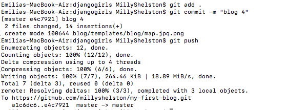

In this entry, I want to talk about how code is becoming such an important factor of society, this week as a class we went to the Hello World: Code and Design exhibition curated by Aaron Seymour. This exhibition opened my eyes to how code affects everything, not just web development and applications. The exhibit reiterated Giests point that “coding has emerged as an essential, world-making practice” (UTS Art 2018) and is a skill that will become integral for success in the future. The exhibit incorporated both aspects of code and design and displayed things ranging from 3D printing, stacks of cups displaying code, Arduino light circuits and even dresses influenced by code. These displays really show the connection between design and code within the 21st century and how code is emerging as a new dominant tool used to create almost anything.
I believe this emergence of code is a great thing as I have learnt over this semester it really is a useful skill to possess. Within the last couple of weeks, I have been working on my website blog and have been making some great progress and starting to really understand what I am doing and how this projects onto my blog. I have started using GitHub and python anywhere to make my website blog go live and be hosted on the internet and have started learning HTML to customize and create my actual website.
I introduced myself to HTML and I am currently up to the step Introduction to HTML. HTML stands for Hyper Text Makeup Language and is classified as a markup language; therefore, it has been marked with tags that provide information for the web browser to decode (Crymble & Turkel 2012). My HTML file template is divided into two elements the head and the body, this is where I place my headings and the information I want to be shown on my blog website through tags. It was fun to see the way I could set out and customize my blog through this HTML template. After creating this template, I now should see if it runs correctly and to do so I need to use GitHub and python anywhere.
Using GitHub and python anywhere was relatively easily due to already using python and sublime on my computer, so I felt comfortable coding and had a basic understanding of what I was working. These two accounts are more just for storing and holding my code to ensure my website can go live. I learnt all about Git during this process and basic git commands, thus learning how to make changes locally and then push these changed to git hub and then pull them onto python anywhere and as a result, update my blog website. After I made a change to any of my files and wanted to update it I follow this process locally, as seen in image 1 and then I open a bash console in python anywhere and follow this process as seen in image 2.
 The image will float to the right of the text.

Once I learnt how to use git commands properly it made updating my blog a lot easier as I started to understand what each command meant so I did not have to keep looking back in the tutorial to figure out what to type to perform what I wanted, thus improving my code literacy.
{% block content %} {% endblock %}